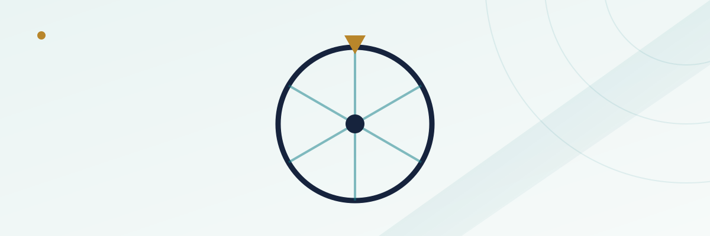

Big Six Wheel Explained: Why It's One of the Worst Bets on the Casino Floor

Walk past a Big Six wheel on a casino floor and it's easy to see why it draws a crowd — it's loud, it's visual, and the spin takes long enough that everyone nearby can watch it happen. That's exactly the point. The Big Six, also called the Money Wheel or Wheel of Fortune, is built for spectacle first and fair math a distant second. Every version of this game carries a house edge well above what you'd find at the blackjack or craps table a few feet away, and on its riskiest bet, the edge is among the worst you'll find anywhere on the floor.
In this guide
How the wheel and the betting layout work
A Big Six wheel is a large vertical wheel, usually mounted behind or beside the dealer, divided into a fixed number of segments — 54 on the standard American version. Each segment carries a symbol or dollar denomination, and a betting layout on the table in front of the dealer mirrors those same symbols. Players place chips on whichever symbol they think the wheel will land on when a leather strap or pointer catches it after the dealer gives it a spin. There's no skill involved in the spin itself and no decision to make once you've bet — you pick a symbol, the wheel spins, and either your symbol lines up with the pointer or it doesn't.
What makes the game worth understanding before you bet on it is that the symbols aren't evenly distributed around the wheel, and the payouts don't fully compensate for that uneven distribution. Both of those facts together are what produce the house edge, and the edge is different for every symbol on the wheel — which is unusual compared to a game like roulette, where (ignoring the 0 and 00) every number pays the same multiple relative to its actual odds.
The standard 54-segment paytable
The most common American Big Six layout uses six denominations plus two specialty symbols, spread across 54 total segments. The lower the payout, the more segments that symbol occupies — which is exactly backward from what a fair game would need to break even.
| Symbol / denomination | Segments on wheel | Typical payout | Approx. house edge |
|---|---|---|---|
| $1 | 24 | 1 to 1 | ~11.1% |
| $2 | 15 | 2 to 1 | ~16.7% |
| $5 | 7 | 5 to 1 | ~22.2% |
| $10 | 4 | 10 to 1 | ~18.5% |
| $20 | 2 | 20 to 1 | ~22.2% |
| Joker | 1 | 40 to 1 | ~24.1% |
| Casino logo | 1 | 40 to 1 | ~24.1% |
Treat these as representative numbers rather than a universal standard — individual casinos run their own paytables and segment counts, and some wheels use fewer denominations or different payout odds entirely. The shape of the problem, though, holds across almost every version of the game: the rarer the symbol, the worse the bet gets, by a wide and growing margin.
Why the house edge is so uneven across symbols
Take the $1 bet as the baseline. It occupies 24 of 54 segments, so your true probability of winning on any given spin is 24/54, or about 44.4%. A fair payout for those odds would need to pay a little over 1.25 to 1 just to break even over time. Instead, it pays a flat 1 to 1 — a shortfall that works out to roughly an 11% house edge, which is already worse than most bets at a blackjack or craps table, but still the best bet on the entire wheel.
Move down to the $5 segment and the gap widens. Only 7 of 54 segments carry that symbol, for a true win probability of about 13%. A break-even payout at those odds would need to be roughly 6.7 to 1. The wheel pays 5 to 1, which translates to a house edge north of 22% — double the edge on the $1 bet, despite feeling like a similar, slightly bigger wager on the same game.
The joker/logo bet: the worst wager on the wheel
The joker and casino-logo segments sit at the extreme end of this pattern. With only one segment out of 54 carrying each symbol, your true win probability is about 1.85%, which would require a fair payout of roughly 53 to 1 to break even. The wheel pays 40 to 1 — a shortfall that produces a house edge above 24%, making it one of the single worst bets you can place anywhere in a licensed casino, land-based or online. For comparison, that's a steeper edge than keno typically carries, and keno already has a reputation as one of the worst-value games on the floor.
None of this means the joker bet is rigged or mislabeled — the odds are exactly as stated, and the rare 40 to 1 hit is real and does happen. It simply means the payout doesn't come close to compensating for how rarely that symbol actually lands, which is a different problem from unfairness but produces the same practical result for your bankroll over time.
Why casinos keep the game around
A game with a double-digit house edge on every single bet, climbing into the mid-20s on its flashiest option, isn't primarily there to generate steady table revenue the way blackjack or baccarat is — those games run tight margins specifically because they're played for extended sessions at higher stakes. The Big Six earns its spot on the floor through volume and visibility instead: it's simple enough that anyone can understand it in ten seconds, the spin itself creates a moment of shared spectacle that draws foot traffic, and minimum bets tend to be low, which keeps the entertainment cheap even though the underlying math is some of the worst available. It's best understood as a game built for a fun, low-stakes diversion between other games, not as something to bet seriously or for extended stretches. For how house edge is calculated and compared across different casino games generally, see our house edge guide.
Common myths
- "The wheel is due for a joker." Each spin is an independent event with the same fixed odds regardless of how long it's been since a given symbol last hit. A joker landing twice in three spins doesn't make it any less likely to land a third time right after.
- "A bigger bet on a safer symbol evens out the edge." Bet size doesn't change the house edge at all — it changes how much is at risk on a fixed-edge bet, not the edge itself. For more on how these two concepts differ, see our guide on common casino game myths.
- "Watching recent spins helps predict the next one." Since the segments and their proportions never change, and each spin is independent, no amount of spin history changes the probability of the next result.
The Big Six isn't a trap, exactly — the rules and odds are posted and legitimate, and plenty of players enjoy it specifically because it's fast, social, and cheap to play casually. The point of understanding the numbers isn't to avoid the game entirely, it's to know that it belongs in the "entertainment, not strategy" category of casino games, alongside things like keno, and to size bets accordingly if you choose to play it at all.
Frequently asked questions
Is the Big Six wheel rigged?
No. Licensed casinos use wheels with fixed, disclosed segment counts and posted payout odds. The high house edge comes from how the payouts are structured relative to the true odds, not from any manipulation of the spin itself.
Which bet on the Big Six has the lowest house edge?
On a standard American wheel, the $1 bet carries the lowest house edge, typically around 11%, because it occupies the most segments on the wheel relative to its modest payout.
Is the Big Six the same game as roulette?
No, even though both involve a spinning wheel. Roulette pays the same relative odds on every even-money or single-number bet (aside from the house's edge built into the 0 and 00), while the Big Six pays wildly different relative odds depending on which symbol you bet, with the house edge climbing sharply on the rarer, higher-payout symbols.
Why do the segment counts and payouts vary between casinos?
There's no single regulated standard for Big Six paytables the way there is for some other games, so individual casinos and jurisdictions can run their own wheel configurations, segment counts, and payout schedules, which is why it's worth checking the posted paytable at the specific wheel you're considering.